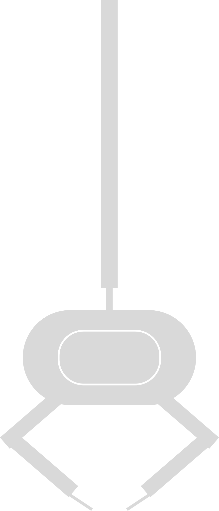
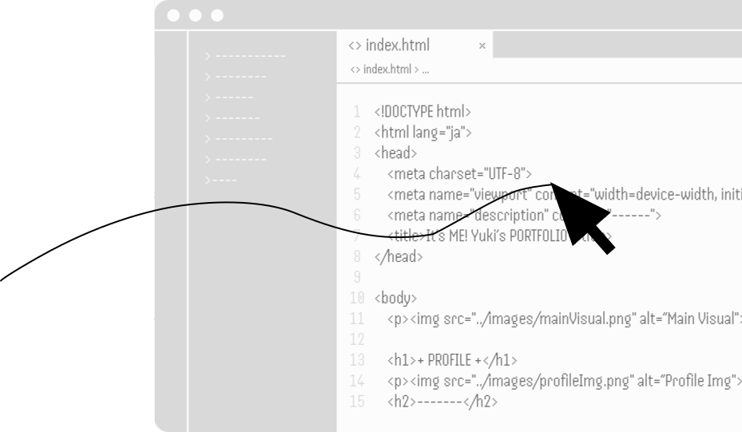
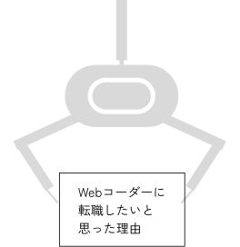

YUKI KUREI
P
O
RT
F
OLIO

Scroll Down


Scroll Down
くれい
ゆうき
榑井 有希
1998.10.20 (Age 28)
出身 東京都
卒業 お茶の水女子大学
前職 アミューズメント施設スタッフ
more >>
大学卒業後、「クリエイティブなアイデアで人を楽しませる仕事がしたい」と考えゲーム会社に入社する。キャラクターグッズ企画職志望。
初期配属先のアミューズメント施設でクレーンゲーム運営に従事する中で、「アイデアを出すだけでなく、作り上げるところまで含めたクリエイティブな仕事がしたい」と考えるようになり、デザインとコーディング両方への関心からWebデザインを学ぶ。
その中で、特にコーディング分野にやりがいと適性を感じたことから、Webコーダーへの転職活動を始める。
2017.3
2017.4
諸般のやむをえない事情により、高校時代に受験勉強に打ち込めなかった悔いが残る。両親に頼み込み浪人の道に進む。
同時に、子どもの頃から「将来の夢」がなかったことがコンプレックスで、「せめて大学には自分なりの研究テーマを持って入学したい」という考えがあった。このため、その人生上の問題に向き合う意図もあった。
2018.4
結局、大学で研究したいテーマは見つからず、漠然としたプログラミングへの関心から上記大学へ入学。
プログラミングを学び、そのおもしろさに魅了される。
2018.8
周囲の大学生と交流する中で、「自分を含め、大学で学びたいことがなくても周囲の環境に流されあたりまえのように大学進学する層がいる一方で、生育環境や経済事情などから大学進学の選択肢が初めからない人もいる」という事実を社会問題と捉え、その実態について知り専門的に研究したいという考えを持つ。この研究テーマについて研究できる大学への再入学を目指す。
2019.4
晴れて、「自分なりの研究テーマ」を研究できる大学へ再入学する。
有意義な大学生活を送ることを決意し、学業、部活動、アルバイトの3つを主軸と定め、それぞれに全力を尽くす。
学業では、「自分なりの研究テーマ」について多くの学びを得る。その中では、入学前に抱いていた自身の考えの視野狭窄さや歪みを理解し反省する機会もあった。卒業論文では、それらの学びの成果や学生人生の総括となるような研究ができた。これを区切りに、卒業後は一旦専攻とは異なる分野に進みたいと考えるようになる。
アルバイトでは、某有名ゲーム会社のオフィシャルショップで働く。その中で、自身の考案したキャラクターグッズ案や店内イベント企画が採用され、実際に商品として販売されたり実施されたりした。この経験から、小中高校時代、学校行事のパンフレットの表紙やポスターなど、「何かをつくる」ことにおいて人に喜ばれることが多かったことを思い出し、「卒業後はクリエイティブなアイデアで人を楽しませる仕事がしたい」と考え、これを就職活動の指針とした。
2023.3
2023.4
大学時代のアルバイト先と同形態のオフィシャルショップを展開しているゲーム会社に入社。そのオフィシャルショップのグッズ制作企画に携わることを志望する。
初期配属として、部署の主要事業であるゲームセンターの店舗スタッフとして勤務。クレーンゲームのゲーム内容の設定なども自ら行い、「おもしろいからこそ遊んでもらえて売上が上がる」運営の実現に尽力する。
自分で手を動かして試行錯誤し、おもしろいクレーンゲームを作り上げていく中で、「新しい技術が身についたり、新しい発見があったりすることに自分は大きな喜びとやりがいを感じる」ということに気づく。
同時に、この試行錯誤の楽しさが、1つ目の大学でプログラミングを学んでいたときに感じたおもしろさに似ていると感じ、本当は自分はプログラミングのような分野の仕事がやりたいのではないかと考え始める。
また、新卒就活時には「クリエイティブなアイデアを企画すること」にしか焦点を当てていなかったが、自分で手を動かしてスキルを習得し、「アイデアを形にしていく」という方面のクリエイティブな仕事にも興味が向くようになる。
2026.2
2026.2
前職での経験を通してやりたいことや自身の適性に対する認識が変化してきたことに加え、シフト制勤務に健康面で限界を感じてきていた理由から、一度立ち止まり自身に合った働き方やキャリアプランをしっかり練り直したいと考え、退職を決める。仮面浪人時代に身についた度胸と行動力、自律心が後押しとなった。
「クリエイティブなアイデア力」を活かせるデザイン分野と、「自分で手を動かしスキルを身につけて作り上げていく力」を活かせるコーディング分野の両方が備わっている点に適性と魅力を感じ、Webデザインを学びたいと考えスクールに入学する。
6ヶ月間スクールで学ぶ中で、コーディングが特におもしろく自分に向いていると考え、Webコーダーとしての転職を志す。
大学受験生時代にしてしまった遠回りにも意味があったようで、少し嬉しく思う。
2026.9


Illustratorを使用したベクターイラストの作成、Photoshopでの写真の加工、伝えたいイメージを正確に伝える情報手段としてのAI生成画像の作成などができます。
すっきりと見やすく、Webサイトを通じて伝えたい情報が正確に伝わるようなデザインを作ることが得意です。
ベクターイラストの作成ができます。日常的にInstagramで情報収集し、トレンドを調べたり、Tipsの引き出しを増やしたりする努力をしています。「3Dとマテリアル」の活用に関心があります。
写真や画像のレタッチができます。日常的にInstagramで情報収集し、トレンドを調べたり、Tipsの引き出しを増やしたりする努力をしています。オブジェクトをガラス風に変える加工など、質感を伴った加工方法に関心があります。
写真を用意するのが難しい場合の代替画像や、非現実的な質感で表現された画像などの作成ができます。著作権等に慎重に配慮し、参考画像を読み込ませず、言語だけで生成するようにしています。
ワイヤーフレーム作成、モックアップ作成ができます。オートレイアウトやコンポーネントを活用し、効率よく、ミスが発生しにくい作り方をするよう心がけています。

誰が見てもわかりやすいコードの書き方をすること、後からの修正や変更にも強い普遍性の高い構造を組むことを常に心がけています。
シンプルなデザインで単調な印象になってしまう場合には、細部のアニメーションを工夫して退屈さをなくすなど、アニメーションで「動き」もデザインし、より良いWebサイトへとブラッシュアップすることに力を入れています。
基本的なWebサイトを制作することができます。レスポンシブ対応もできます。BEMに配慮し、誰が見てもわかりやすいコードを書くよう心がけています。また、レイアウトの指定などは相対的でなく絶対的な指定方法になるようにし、後からの修正や変更に強いコードになるよう努めています。
基本的なWebサイトの装飾、アニメーション設定ができます。関数やコメントの活用、プロパティを書く順序に規則性を持たせるなどし、誰が見てもわかりやすく、後からの修正や変更がしやすい書き方になるように心がけています。
Webサイトに簡単なアニメーションをつけられます。実現したい「動き」ありきで、それが実現できる方法を自分で積極的に調べ実装するという努力をしています。過去のプログラミング経験から、実現したい動きを実現するためのアルゴリズムを考える力があります。
JavaScriptのコードを簡潔にするために活用できます。「仕組みはあまりわかっていないが、インターネットなどで公開されているコードを引用して実現したい動きなどを実現できる」というレベルです。